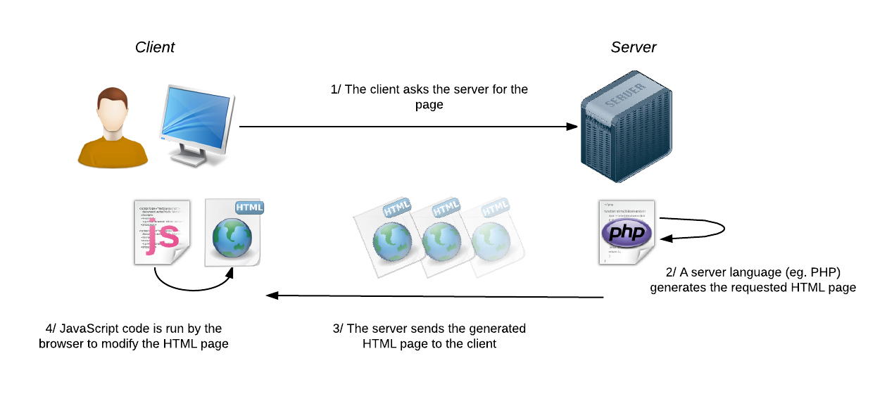
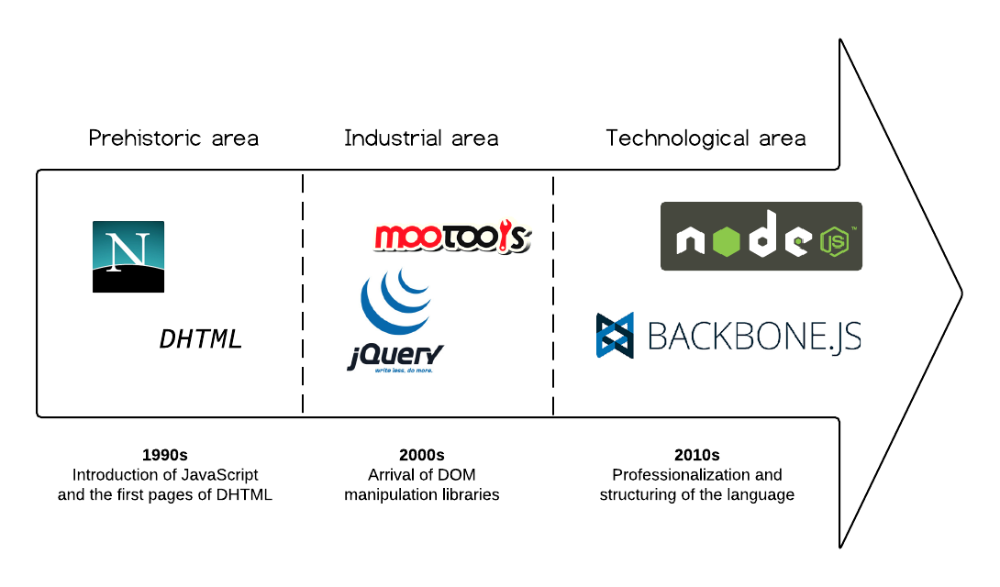
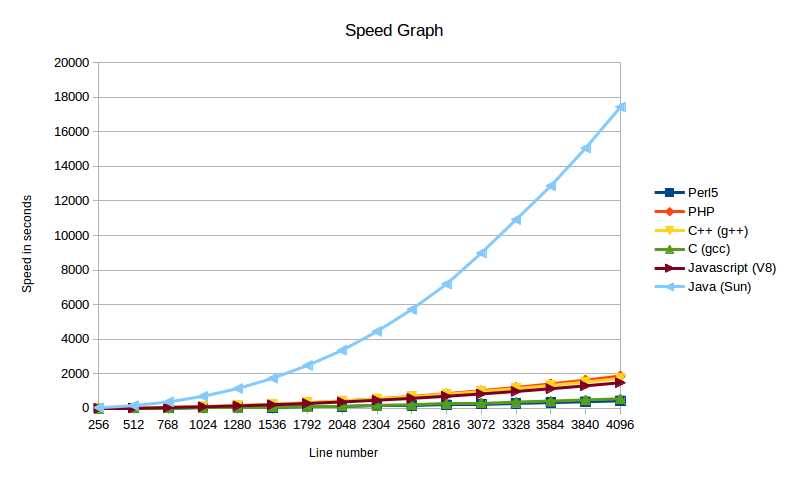
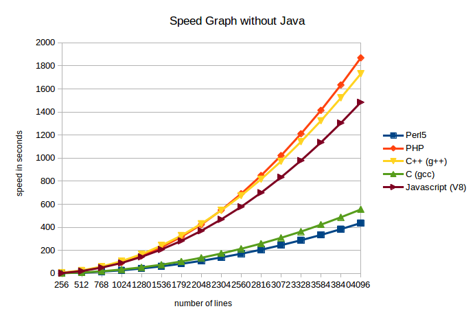

JavaScript
The new hype

Jordan Quagliatini, Benjamin Freeman
Have you tried JavaScript ?
What is JavaScript ?
Dynamic web pages

Evolution

A complete language

Why do you hate it ?
Lack of rigor
no type for variables
not the same ECMA standard everywhere
poor Object Oriented Programming (OOP)
Async
requires to think differently
leads to the "callback hell"
harder to debug
Think about this
Feb 2016 | Feb 2015 | Programming Language | Ratings | Change |
1 | 2 | Java | 21.145% | +5.80% |
2 | 1 | C | 15.594% | -0.89% |
3 | 3 | C++ | 6.907% | +0.29% |
… | ||||
9 | 6 | Javascript | 2.201% | -1.31% |
Why is it so famous?
it’s fast with v8, the open-source interpreter from Google
You don’t believe us ?


Why is it so famous? (2/2)
libraries, for example jQuery
JSON, which is convenient for storing data
AJAX, making websites better places
Some projects in JS
Angular.js
React.js
JQuery
Node.js
Backbone.js
Webpack.js
Why you MUST learn Javascript ?
can be used for an entire website, in particular lightweight web apps
better performances than PHP
you have a better understanding of how things work
it’s fashionable
Any idea on how to use JS outside the browser?
NodeJs
MongoDB uses it as script language
Some Routers uses it as macro language
…
Conclusion
Thanks
any question ?